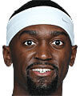
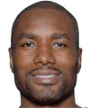
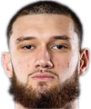
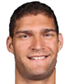

Estatura: 2,08
Peso: 113kg
Edad: 27 años
Años en la NBA: 6 años
Procedente de: Arkansas

Estatura: 2,13
Peso: 107kg
Edad: 32 años
Años en la NBA: 12 años
Procedente de: España

Estatura: 2,11
Peso: 109kg
Edad: 22 años
Años en la NBA: Novato
Procedente de: Seton Hall

Estatura: 2,13
Peso: 128kg
Edad: 34 años
Años en la NBA: 13 años
Procedente de: Stanford